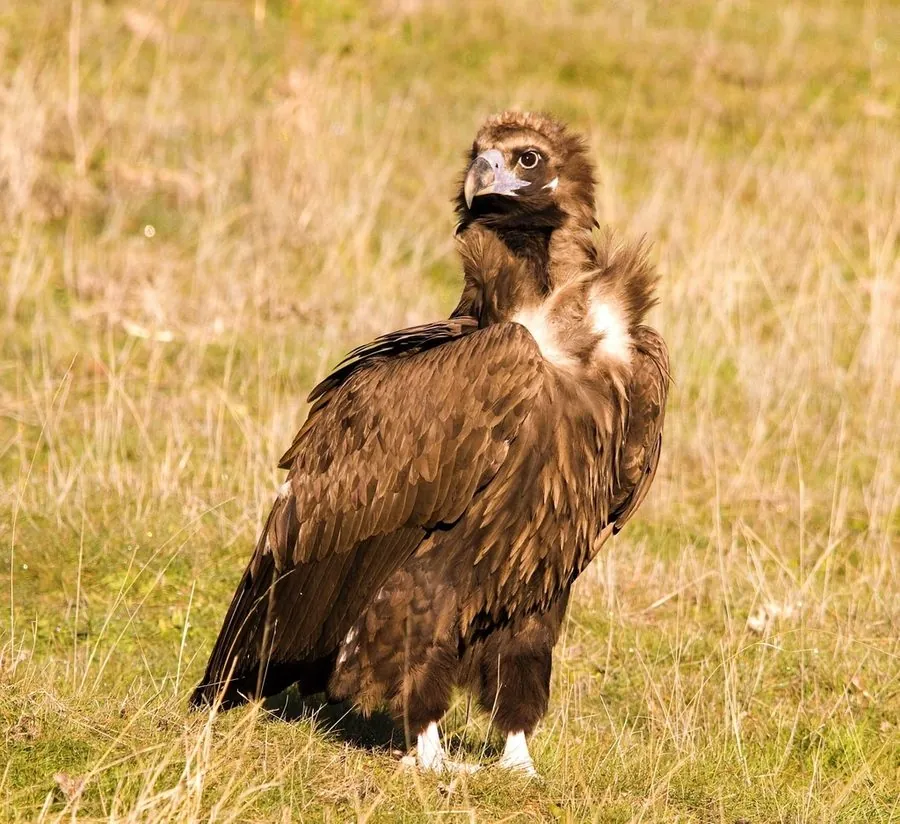

鸟类 · 动物界
秃鹫 Aegypius monachus

体形巨大的深褐色猛禽，头和颈裸露呈灰蓝色，以腐肉为食，常在高空盘旋寻找动物尸体，被称为“清道夫”。
- 分类
- 门脊索动物门纲鸟纲目鹰形目科鹰科属秃鹫属
- 栖息环境
- 高山、高原、草原和荒漠，常在开阔地带高空盘旋寻找动物尸体
- 地理分布
- 南欧、北非、中亚至东亚，中国青藏高原、内蒙古和新疆等地有分布
- 保护级别
- IUCN 近危（NT）；中国国家一级保护动物
物种志
秃鹫体长 98–120 cm，翼展 250–295 cm，体重 7–14 kg，是体型最大的猛禽之一。成鸟通体深褐色，头部和颈部裸露，皮肤呈灰蓝色，颈基有一圈蓬松的羽领，尾羽呈楔形。它宽大的翅膀末端指状分开，飞行时可以看到明显的翼指，常借着上升气流在高原上空长时间盘旋。
秃鹫分布于南欧、北非、中亚和东亚，中国青藏高原、内蒙古、新疆等地都有分布。它栖息在高山、高原、草原和荒漠，以大型动物的尸体为主食，偶尔捕食小型脊椎动物。发现尸体后，它会先撕开皮肉，其他食腐鸟类随后跟进，因此被称为草原上的“清道夫”。繁殖期在悬崖或高树上筑大型树枝巢，每窝产卵 1 枚，孵化 50–56 天，育雏约 3–4 个月。兽药残留中毒和偷猎是其主要威胁，中国将其列为国家一级保护动物。
形态与习性
- 食性以大型动物尸体为主，偶尔捕食小型脊椎动物
- 体长98–120 cm
- 翼展250–295 cm
- 体重7–14 kg，是体型最大的猛禽之一
- 繁殖每窝 1 枚卵，孵化 50–56 天，育雏 3–4 个月
- 寿命野外约 20–30 年
- 生态作用清理腐尸，减少疾病传播
趣味知识
- 秃鹫头部和颈部裸露，进食腐肉时不易沾上血污，便于保持清洁。
- 它的胃酸极强，能分解腐肉中的细菌，自己却很少因此生病。
- 秃鹫能借着上升气流在数千米高空盘旋数小时，用视力搜寻地面尸体。
- 在青藏高原，秃鹫在天葬习俗中扮演着送别逝者的角色。